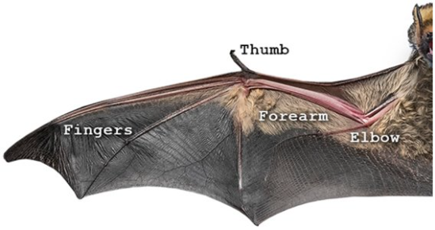
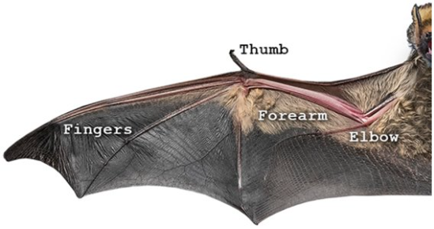

Bat - Chiroptera
A bat’s wing structure is very much like a human arm and hand, except it has a thin layer of skin (called the patagium) between the “hand” and the body, and between each finger bone; this skin allows the animal to fly. All bats have a thumb, it usually has a claw which is used for climbing, food handling, and fighting.
 
